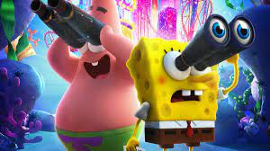
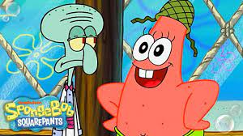
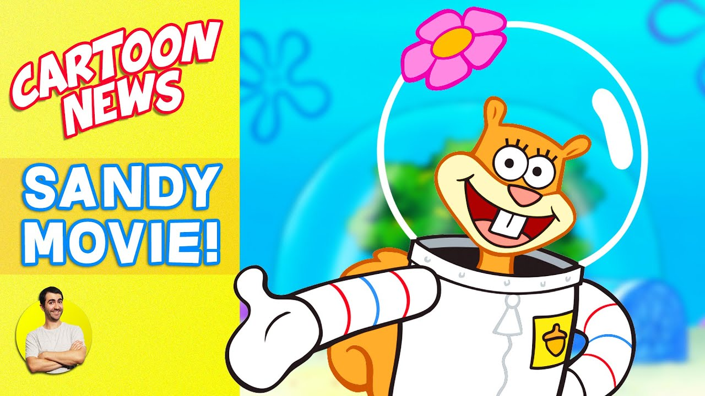
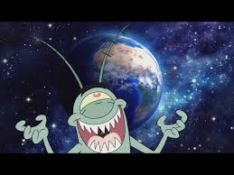

spongebob
spongebob

spongebob
Cool down this summer by heading back down to Bikini Bottom with brand new episodes of SpongeBob SquarePants, premiering weekdays at 1:00 p.m. (ET/PT) starting Monday, June 19, only on Nickelodeon!
He also appears older than Pearl, who -- as mentioned earlier -- turned 16 in the show. Plus, he owns his own home, pays bills and works a full-time job. In combination, these factors put SpongeBob SquarePant's age anywhere from 18 to his mid-20s.
It does have some name-calling and taunting that parents with young kids must be aware of, but there is no strong profanity in the series. Other than that, characters like SpongeBob and Patrick do not use their common sense as much as they should, but they are never mean to those around them.
patrick

patrick
Patrick Starrr (born Patrick Simondac) is a Filipino-American make-up artist, and social media influencer.
The title character is a sea sponge named SpongeBob. He has two neighbors: a pink starfish named Patrick and an arrogant octopus named Squidward.
Spongebob: ADHD, Patrick: Down syndrome, Squidward: depression; Mr.
sandy

sandy
The SpongeBob mental illness theory labels Patrick as the representation of intellectual disability, while Sandy Squirrel has Borderline Personality Disorder. Sandy's “diagnosis” comes from her extreme mood swings and impulsivity, which leads to risky activities.
sandy Cheeks, the bassist of The Infection, was found dead in her Arlington home. It was later determined that Sandy Cheeks died on July 14th, just two days before her body was found. Arlington detectives have stated that Sandy had "several cuts on her arms and shoulders with several pieces of cocaine".
She voiced Sandy and Cindy in video games, shorts, theatrical films and commercials. She still voices Sandy Cheeks to this day now that SpongeBob SquarePants is the longest running Nicktoon of all time.
planton

planton
Plankton are usually microscopic, often less than one inch in length, but they also include larger species like some crustaceans and jellyfish. Scientists classify plankton in several ways, including by size, type, and how long they spend drifting.
A bloom may last several weeks, but the life span of any individual phytoplankton is rarely more than a few days.
A sudden disappearance of phytoplankton would lead to the complete collapse of the aquatic ecosystem. In addition, if all the plankton disappeared it would increase the levels of carbon in our air, thus further accelerating climate change.